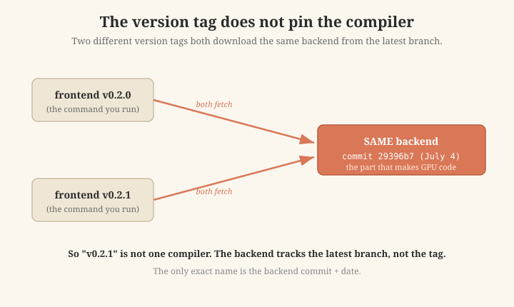
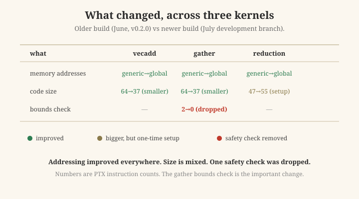
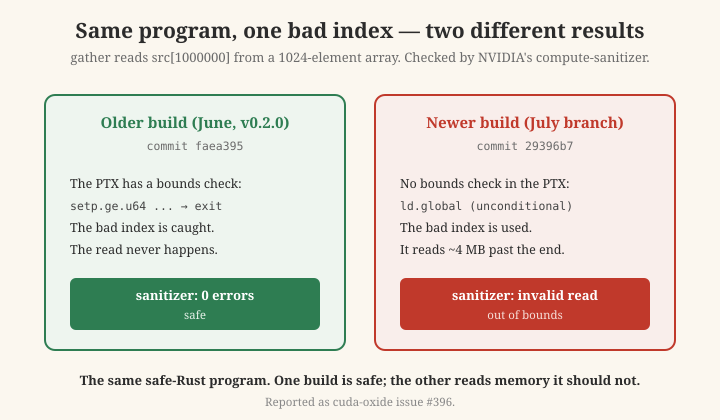

The short version
- A few weeks ago I compared cuda-oxide (a Rust-to-GPU compiler) against three other compilers. I wrote down what its GPU code looked like.
- I re-ran the same test recently. Two of my three findings had changed. The tool now makes better memory addresses and, for simple kernels, much smaller code.
- But one change was different in kind: a safety check disappeared. Code that used to stop a bad array read now reads memory out of bounds instead. I reported this to the project (issue #396).
- There is also a trap I did not expect: the version number does not tell you which compiler you have. The part that makes the GPU code is downloaded fresh from the latest development branch, not from the version you asked for.
- The lesson: record the exact version of your tools when you measure — good practice for any benchmark, and especially here, where the version tag does not pin the backend. And re-check your old findings before you trust them.
Why I re-tested
My earlier post compared four GPU compilers on three small kernels. cuda-oxide is an early "alpha" project — it says so itself, and it changes fast. I wanted to see what a newer version did differently. This should have been a simple "old version vs new version" comparison. It was not simple, and that is the story.
The trap: the version tag does not pin the compiler
cuda-oxide has two parts:
- The front part (
cargo-oxide) — the command you run. This has version numbers, like v0.2.0 and v0.2.1. - The back part (the "backend") — the part that actually turns Rust into GPU code. This is what matters for my tests.
Here is the surprise. When you install a specific version of the front part, it then downloads the back part from the latest development branch — not from the version you picked. I checked this directly: I installed v0.2.0 and, separately, v0.2.1. Both downloaded the same back part (the same commit, dated July 4).

The front part is version-tagged, but it downloads the back part from the latest branch. So two version tags can give you the same backend — or different ones on different days.
So "cuda-oxide v0.2.1" does not tell you which compiler you have. Two people who both install "v0.2.1" on different days can get different GPU code. The only thing that truly identifies the compiler is the backend commit and its date.
This matters for my old post: I never wrote down the backend commit in June. So I cannot say exactly which compiler made my old results. That gap is part of the lesson.
So in this post I do not say "version 0.2.0" or "version 0.2.1" as the real names, because those tags do not identify the compiler. Instead I name each compiler by its backend commit — a commit in cuda-oxide's own code repository. I call them the older build (commit faea395, released as v0.2.0 on June 5) and the newer build (commit 29396b7, taken from the development branch on July 4). These commits are the real, exact names.
What changed on the three kernels
I rebuilt all three kernels (vecadd, gather, reduction) on the newer build and compared to the older one.
1. Memory addresses: better everywhere. In the older build, cuda-oxide used generic memory addresses (a slower, less specific form). In the newer build, all three kernels use global addresses — the same clear form the C++ compilers use. This is a clear improvement, and it means one of my old findings ("cuda-oxide is the only one using generic addresses") is now out of date.
2. Code size: mixed. Two kernels (vecadd, gather) got much smaller — about 42% fewer instructions. But the reduction kernel got a little bigger. The extra instructions there are one-time loop setup, not the main work, so this is likely fine. So "smaller" is not a simple yes for every kernel.
3. A safety check disappeared. This is the important one, so it gets its own section.

Older build vs newer build across the three kernels. Addressing improved everywhere; size is mixed; the gather bounds check was dropped.
The safety check that disappeared
The gather kernel does out[i] = src[indices[i]]. It reads a position from indices, then uses that number to read from src. The number comes from memory at run time, so the compiler cannot know in advance if it is inside src. In safe Rust, this read must be checked: if the number is too big, the program must not read past the end of the array.
The older build added this check. If the index was out of range, the GPU thread stopped safely and did not do the bad read.
The newer build removed it. The kernel now reads src[index] with no check at all.
To be sure this was real, I ran a test: I set one index to 1,000,000, into an array with only 1,024 elements. Then I ran the exact same program on both builds, and I checked each with NVIDIA's own memory checker (compute-sanitizer).
- The older build (June, v0.2.0): the memory checker reported 0 errors. The bad index was caught; the program was safe.
- The newer build (July, development branch): the memory checker reported an invalid read — the program read memory about 4 megabytes past the end of the array. NVIDIA's tool confirmed it.

The same safe-Rust program with one out-of-range index. The older build guards the access (0 errors); the newer build reads ~4 MB out of bounds (invalid read). Reported as issue #396.
Same safe-Rust program. One build is safe. The other reads memory it should not.
I want to be fair here: cuda-oxide is an early alpha, and moving fast is what an alpha should do. This is not a criticism of the project. But a missing bounds check is worth reporting, so I reported it: cuda-oxide issue #396. I also bisected it — rebuilding old backend commits one by one — and found the change landed within about a week of the v0.2.0 release.
A short, honest note: the bounds check on the output slice (a different, "witness" style of access) still works. It is specifically the plain src[index] read that lost its check.
The lesson
Testing an early-stage compiler is like aiming at a moving target. What I learned:
- Record the exact version of your tools when you measure — precisely enough to reproduce it. This is good practice for any benchmark. It matters even more for a tool like cuda-oxide, where the version tag does not pin the backend: the part that generates code tracks the latest branch, so "v0.2.1" alone is not a reproducible coordinate.
- Re-check old findings before trusting them. Two of my three findings changed in a few weeks.
- Watch safety-critical code closely. A bounds check can appear or disappear between commits. If you rely on it, verify it is still there — every time.
None of this is a knock on cuda-oxide. Fast movement is what an alpha should do. The lesson is about how we test and cite fast-moving tools.
Reproduce it
The kernels, the before/after GPU code, the safety test, and both memory-checker logs are in the repo: github.com/midiareshadi/oxide-moving-target. The kernels come from my earlier study (rust-cuda-vs-oxide); this repo adds the July rebuild and the safety test.